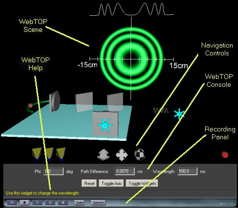
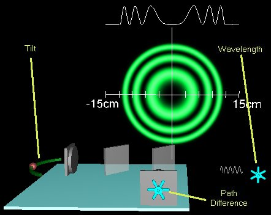
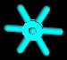
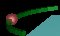

Interference - Michelson Interferometer: Directions
Under normal operation, your WebTOP window should look like the following:

The WebTOP window has four parts. The top portion is the active WebTOP scene.
The second portion is the VRML Navigation controls.
The third portion, the console, contains a message line that provides help on the operation of the Widgets and keyboard entry boxes.
The fourth portion is the recording panel that allows you to record and replay WebTOP sessions. You may scroll down to read on, or
select the appropriate link from the following items:
How To Change
Parameters
During normal operation of the module, you should see a figure similar to this:

In this module you can change the properties of the incident light and the
path traveled by light. The parameters that you can change
are the path difference, the tilt
of the second mirror and the wavelength
of the light. These parameters can
be changed by manipulating the widgets in the scene or by using the
WebTOP Console.
This module includes two types of widgets.
|  |
 |
| Wheel Widget |
Mirror Tilt Widget |
To change a parameter, you need to position your cursor over the proper
widget. Labels on the module figure, shown above, identify the function of each of the
widgets. Once you have placed the cursor over the widget, the cursor changes shape.
If you click on the left mouse button, a message explaining the operation
of the widget appears at the help portion of the WebTOP console.
Changing a Parameter with the Wheel Widget:
Once you select the wheel, drag and rotate the cursor to the left or right
to change the value of the parameter. You may need to repeat dragging in the same
direction until you obtain the desired value. The values of the parameters are
visible through the console.
Changing a Parameter with the Tilt Widget:
Once you select the widget, position the cursor over the red ball and move it along the green guide to the direction you want to tilt the mirror.
Changing Parameter With the WebTOP Console:
You may change the parameters by typing the values in the "Keyboard
Entry Boxes" then pressing the "Enter" key.
|